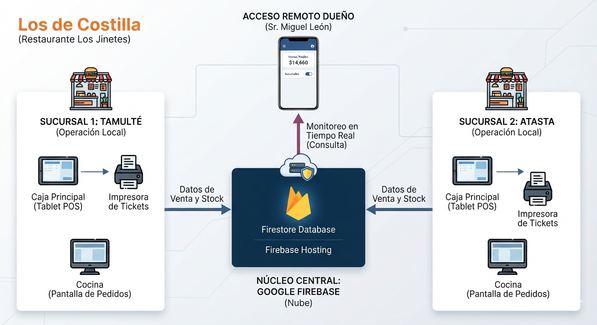

¿Qué dolores operativos le vamos a aliviar?
Don Miguel, operar sucursales de alta rotación (tacos y tortas) a la distancia genera puntos ciegos. Este software nativo está diseñado para eliminar de raíz los siguientes problemas:
El dolor de la "Caja Negra"
Ya no tendrá que esperar al cierre de turno o ir físicamente para saber cuánto han vendido. Sabrá la venta exacta al segundo desde su celular.
Fugas e incertidumbre en la Costilla
La costilla es su insumo rey. Cada venta descontará gramos automáticos del inventario. Si se vendieron 40 tortas, el sistema calculará exactamente cuánta carne debe faltar.
Tickets perdidos y órdenes lentas
Evite retrasos en cocina. Las órdenes tomadas en caja se mandan digitalmente a la pantalla de preparación o tiquera de la cocina al instante.
Cancelaciones sospechosas
Su software registrará qué usuario cajero eliminó un producto o modificó una cuenta, bloqueando malas prácticas operativas.

Equipamiento del MVP (Mínimo Producto Viable)
Para arrancar de inmediato sin inversiones infladas, cada sucursal (Tamulté y Atasta) requiere la siguiente infraestructura tecnológica básica para captura e impresión:
Estación de Captura Principal
Tablet Android / iPad de 10" o Laptop básica para el cajero.
Impresora Térmica de Tickets de Venta (Comprobante)
Tiquera térmica de 80mm con conexión USB / Bluetooth.
Impresora de Comandos para Cocina (Opcional Digital)
Impresora térmica dedicada a producción o una Pantalla / Monitor de apoyo.
Nota de desarrollo: El código HTML/JS se comunicará de manera nativa con las tiqueras mediante protocolos de impresión estándar (ESC/POS) asegurando rapidez en el despacho.
Costo del Desarrollo
Incluye el diseño de la interfaz (HTML/CSS/JS), bases de datos en tiempo real (Firebase), roles de usuario y panel administrativo unificado para monitorear ambas sucursales.
Presupuesto del Software
$12,500 MXN
*No incluye la compra del hardware. Pago 50% anticipo y 50% contra entrega funcional.
Póliza de Soporte y Nube
Cubre el hospedaje seguro de la app en la nube, el almacenamiento de datos en Firebase, actualizaciones menores del menú, solución de caídas y soporte técnico remoto ante fallas de impresión.
Costo Mensual
$700 MXN / mes
*Comienza a pagarse a partir del segundo mes de estar operando en sucursales.
Arquitectura del Sistema: Operación y Consulta
Visualización de cómo Firebase separa los datos de cada caja física pero los unifica al instante en el celular del Sr. Miguel León.
Los de Costilla - Tamulté
Google Firebase Cloud
Filtrado estricto por atributo de sucursal (`sucursalId`)
Los de Costilla - Atasta
Consulta Gerencial (Dashboard Móvil)
El celular del dueño se conecta directamente al nodo central de la nube, saltándose la red física de las sucursales. Esto garantiza que la consulta de métricas no interfiera ni sature el flujo de cobro de los cajeros.
Dashboard Don Miguel
Ventaja Tecnológica Exclusiva
Al desarrollar usando la arquitectura de Firebase, si el internet de Atasta o Tamulté falla momentáneamente, las cajas pueden seguir registrando pedidos. El sistema se sincronizará automáticamente con la nube en cuanto regrese la señal, garantizando que el negocio nunca se detenga.